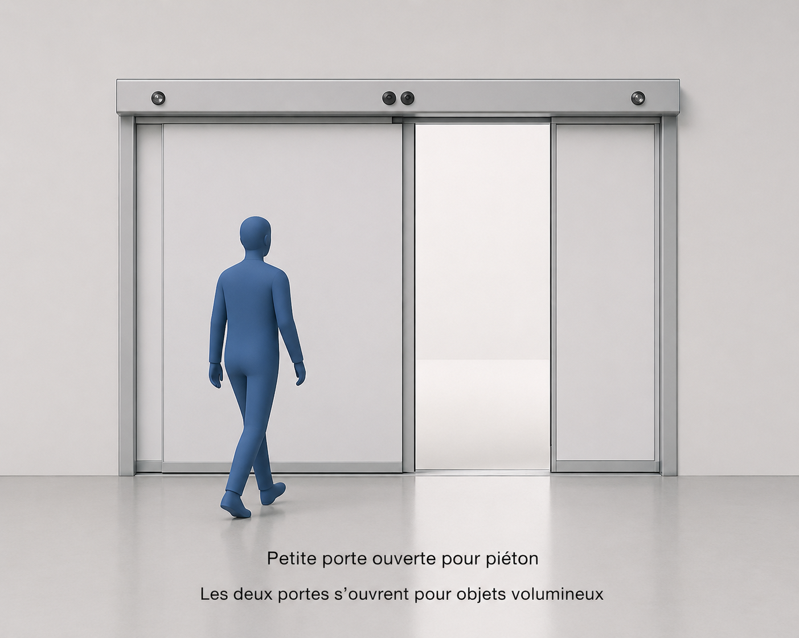
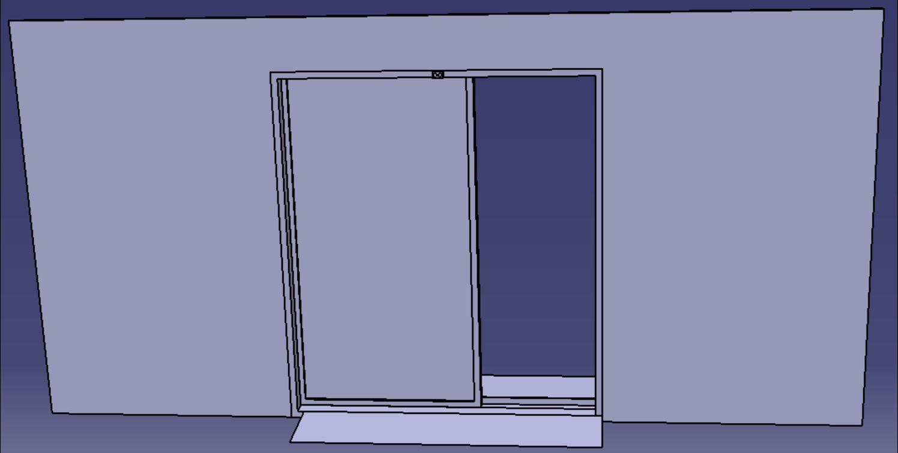
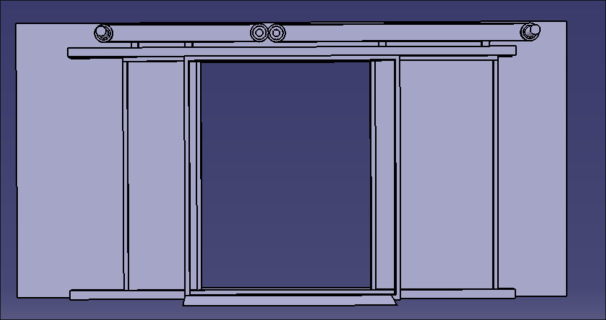
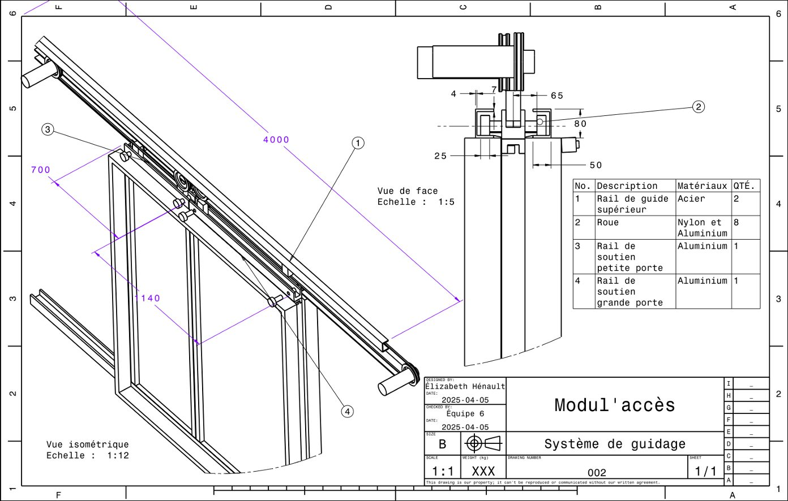
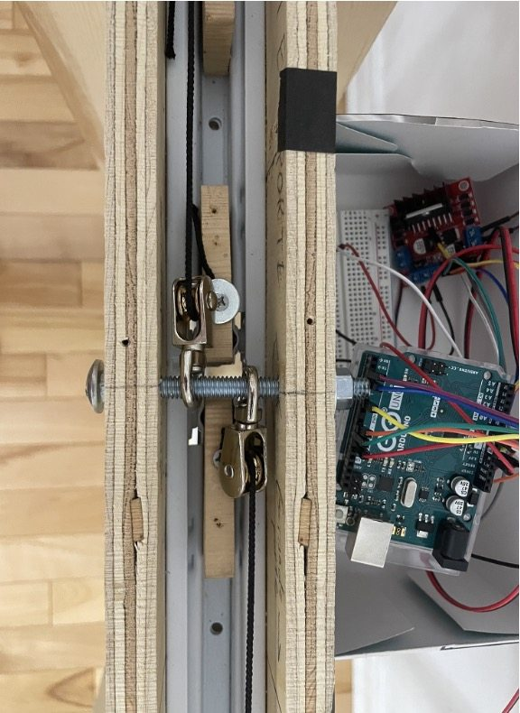
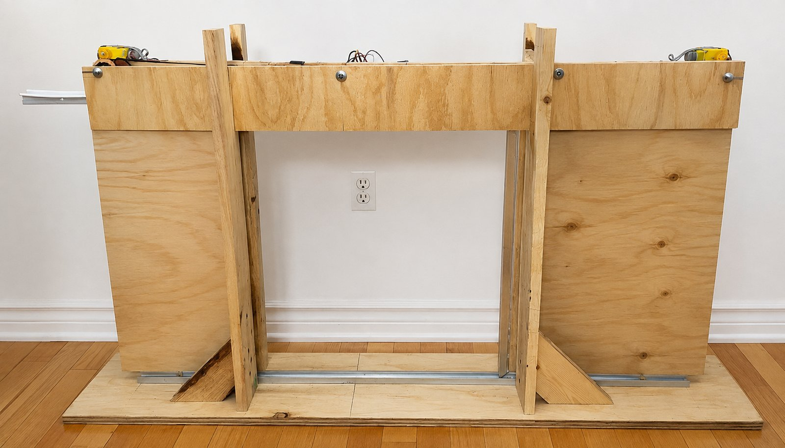

Team project · 2025
Modul'accès

Three problems, one entrance
The brief started with a single entryway that was failing three different groups at once, so the fix had to solve all three together, not trade one off against another:
- 01 Poor accessibility for people with reduced mobility — wheelchairs, stretchers, and equipment don't fit through a standard-width opening.
- 02 Poor thermal regulation — a door held open (or opened fully for every visitor) lets conditioned or heated air escape.
- 03 Queue formation at peak hours — a single fixed-width door becomes a bottleneck when traffic spikes.
How it works
The system uses a LiDAR sensor to measure the size of whoever — or whatever — is approaching the entrance, then chooses one of two door configurations automatically:
- Full opening — triggered when the sensor reads something wider than a standard pedestrian: a wheelchair, a stretcher, or someone carrying equipment.
- Partial opening — triggered for a regular pedestrian, opening only the smaller of the two door panels. This keeps the airflow — and the heat loss — to a minimum during winter months, while still moving people through quickly.
Mechanically, the two panels ride on a dual guide-rail system — a steel upper rail carrying eight nylon-and-aluminum wheels, with separate aluminum support rails for the small and large door panels (see the guidance-system drawing below). We designed the whole rail and carriage assembly in CAD before building it.
Built and tested end-to-end
This wasn't just a simulation — we built a physical prototype ourselves, wrote the full Arduino control code from scratch, and demonstrated it live in front of a jury. Getting from a rail drawing to a door that reliably opens the correct amount, for the correct object, on the first try meant a lot of iteration on the sensor thresholds and the drive mechanism.
Gallery




